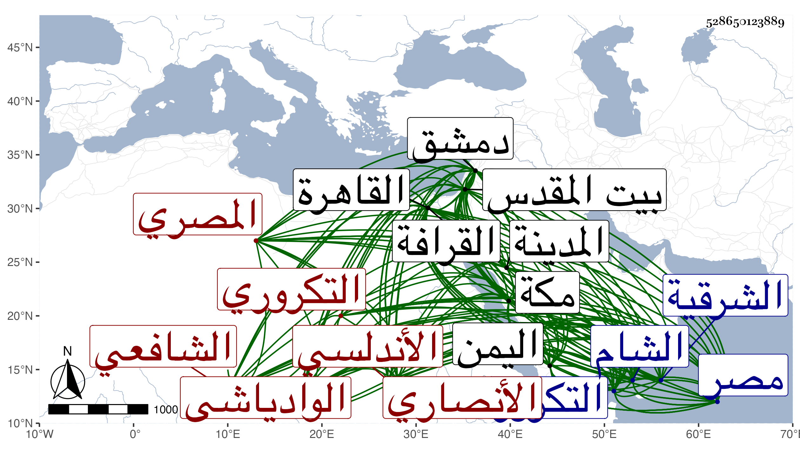

0902Sakhawi.DawLamic.ITO20230111-ara1.EIS1600.528650123889
Biography ID: 528650123889
330
عمر بن علي بن أحمد بن محمد بن عبد الله السراج أبو حفص بن أبي الحسن الأنصاري الوادياشي الأندلسي التكروري الأصل المصري الشافعي والد علي الماضي ويعرف بابن الملقن . ولد في ربيع الأول سنة ثلاث وعشرين في ثاني عشريه كما قرأته بخطه وقيل في يوم السبت رابع عشريه والأول أصح بالقاهرة ، وكان أصل أبيه أندلسيا فتحول منها إلى التكرور وأقرأ أهلها القرآن وتميز في العربية وحصل مالا ثم قدم القاهرة فأخذ عنه الأسنوي وغيره ثم مات ولصاحب الترجمة سنة فأوصى به إلى الشيخ عيسى المغربي رجل صالح كان يلقن القرآن بجامع طولون فتزوج بأمه ولذا عرف الشيخ به حيث قيل له ابن الملقن وكان فيما بلغني يغضب منها بحيث لم يكتبها بخطه إنما كان يكتب غالبا ابن النحوي وبها اشتهر في بلاد اليمن ، ونشأ في كفالة زوج أمه ووصيه فحفظ القرآن والعمدة وشغله مالكيا ثم أشار عليه ابن جماعة أحد أصحاب أبيه أن يقرئه المنهاج الفرعي فحفظه وذكر أنه حصل له منه خير كبير وأنشأ له ربعا فكان يكتفي بأجرته وتوفر له بقية ماله للكتب وغيرها بحيث قال شيخنا أنه بلغه أنه حضر في الطاعون العام بيع كتب بعض المحدثين فكان الوصي لا يبيع إلا بالنقد الحاضر قال : فتوجهت إلى منزلي فأخذت كيسا من الدراهم ودخلت الحلقة فصببته فصرت لا أزيد في كتاب شيئا إلا قال : بع له فكان فيما اشتريته مسند الإمام أحمد بثلاثين درهما ، وقال المقريزي في عقوده أنه كان يتحصل له من ريع الربع كل يوم مثقال ذهب مع رخاء الأسعار وعدم العيال ، وتفقه بالتقي السبكي والجمال الأسنائي والكمال النشائي والعز بن جماعة وأخذ في العربية عن أبي حيان والجمال بن هشام والشمس محمد بن عبد الرحمن بن الصائغ وفي القراءات عن البرهان الرشيدي ورافقه في بعض ذلك الصدر سليمان الأبشيطي واجتمع بالشيخ إسماعيل الأنبابي ، بل قال البرهان الحلبي أنه اشتغل في كل فن حتى قرأ في كل مذهب كتابا وأذن له بالإفتاء فيه وكتب المنسوب على السراج محمد بن محمد بن نمير الكاتب وسمع عليه وعلى الحفاظ أبي الفتح بن سيد الناس والقطب الحلبي والعلاء مغلطاي واشتدت ملازمته له وللزين أبي بكر الرحبي حتى تخرج بهما وقرأ البخاري على ثانيهما والحسن بن السديد وكذا سمع على العرضي ونحوه وابن كشتغدي والزين بن عبد الهادي ومما سمعه عليه صحيح مسلم ومحمد بن غالي والجمال يوسف المعدني والصدر الميدومي وأكثر عن أصحاب النجيب وابن عبد الدائم وأجاز له المزي وغيره من مصر ودمشق وممن أجاز له الشمس العسقلاني المقري ودخل الشام في سنة سبعين فأخذ عن ابن أميلة وغيره من متأخري أصحاب الفخر بن البخاري ، واجتمع بالتاج السبكي ونوه به بل كتب له تقريظا على تخريج الرافعي له أظنه في مدحه وألزم العماد بن كثير فكتب له أيضا ورافق التقي بن رافع وقرأ في بيت المقدس على العلائي جامع التحصيل في رواة المراسيل من تأليفه ووصفه بالشيخ الفقيف الإمام العالم المحدث الحافظ المتقن شرف الفقهاء والمحدثين والفضلاء وكذا عظمه أبو البقاء السبكي ووصفه العراقي في طبقة بالشيخ الامام الحافظ واشتغل بالتصنيف وهو شاب بحيث قرأت بخطه إجازة كتبها وهو بمكة في ذي الحجة سنة إحدى وستين وسبعمائة تجاه الكعبة قال فيها : إن من مروياته الكتب الستة ومسند الشافعي وأحمد الدارمي وعبد وصحيح ابن حبان وسنن الدارقطني والبيهقي والسيرة تهذيب ابن هشام وأن من مشايخه سماعا أصحاب الفخر وأصحاب النجيب الحراني وآخرهم الصدر الميدومي ومن أصحاب النجيب الشهاب أحمد بن كشتغدي يروي عن جماعة قدماء بالإجازة منهم ابن مالك النحوي والمحيوي النووي وأن من مشايخه المعدني الحنبلي ، أجاز له العز بن عبد السلام ومنهم الحافظ بن سيد الناس والقطب الحلبي شارح البخاري وصاحب تاريخ مصر وغيرهما من المؤلفات المفيدة قال : ووقع لي عدة أحاديث تساعيات ذكرت منها ثلاثة في آخر كتابي المقنع في علوم الحديث وهذا على ما يوجد اليوم ، قال : ومن تصانيفي يعني في الحديث تخريج أحاديث الرافعي في سبع مجلدات ومختصره الخلاصة في مجلد ومختصره المنتقى في جزء وتخريج أحاديث الوسيط للغزالي المسمى بتذكرة الأحبار لما في الوسيط من الأخبار في مجلد وتخريج أحاديث المهذب المسمى بالمحرر المذهب في تخريج أحاديث المهذب في مجلدين وتخريج أحاديث المنهاج الأصلي في جزء حديثي وتخريج أحاديث ابن الحاجب كذلك وشرح العمدة المسمى بالأعلام في ثلاث مجلدات عن نظيره وأسماء رجالها في مجلد غريب في بابه وقطعة من شرح البخاري وقطعة من شرح المنتقي في الأحكام للمجد بن تيمية وطبقات الفقهاء الشافعية من زمن الشافعي إلى سنة سبعين وسبعمائة وطبقات المحدثين من زمن الصحابة إلى زمني ومنها في الفقه شرح المنهاج في ست مجلدات وآخر صغير في اثنين ولغاته في واحد والتحفة في الحديث على أبوابه كذلك والبلغة على أبوابه في جزء لطيف والاعتراضات عليه في مجلد وشرح التنبيه في أربع مجلدات وآخر لطيف اسمه هادي النبيه إلى تدريس التنبيه والخلاصة على أبوابه في الحديث في مجلد وهو من المهمات وأمنية النبيه فيما يرد على التصحيح للنووي والتنبيه في مجلد ولخصته في جزء للحفظ سميته إرشاد النبيه إلى تصحيح التنبيه وهو غريب في بابه يتعين على طالب التنبيه حفظه وشرح الحاوي الصغير في مجلدين ضخمين لم يوضع عليه مثله وتصحيحه في مجلد وشرح التبريزي في مجلد قال : وقد شرعت في كتاب جمعت فيه بين كلام الرافعي في شرحيه ومحرره والنووي في شرحه ومنهاجه وروضته وابن الرفعة في كفايته ومطلبه والقمولي في بحره وجواهره وغير ذلك مما أهملوه وأغفلوه مما وقفت عليه من التصانيف في المذهب نحو المائتين سماه جمع الجوامع ثم تجدد له بعد ذلك الكثير فقال له شيخنا أن له في علوم الحديث المقنع ، قلت : وقفت عليه وهو في مجلد وله أيضا التذكرة في كراسة رأيتها ، قال شيخنا : وشرح المنهاج في عدة شروح أكبرها في ثمان مجلدات وأصغرها في مجلد والتنبيه كذلك والبخاري في عشرين مجلدة اعتمد فيه على شرح شيخه القطب ومغلطاي وزاد فيه قليلا وهو في أوائله أقعد منه في أواخره بل هو من نصفه الثاني قليل الجدوى ، قلت : وقد قال هو أنه لخصه من شرح شيخه مغلطاي الملخص له من شرح القطب الحلبي وأنه زاد عليهما وأنه شرح زوائد مسلم على البخاري في أربعة أجزاء وزوائد أبي داود على الصحيحين في مجلدين وزوائد الترمذي على الثلاثة كتب منه قطعة صالحة وزوائد النسائي عليها كتب منه جزءا وزوائد ابن ماجة على الخمسة في ثلاث مجلدات وسماه ما تمس إليه الحاجة على سنن ابن ماجة وقال في خطبته أنه لم ير من كتب عليه شيئا وأنه يبين من وافقه من باقي الأئمة الستة وضبط المشكل في الأسماء والكنى وما يحتاج إليه من الغريب والغرائب مما لم يوافق الباقين ابتدأه في ذي القعدة سنة ثمانمائة وفرغه في شوال من التي بعدها وقفت عليه وعلى شرح زوائد أبي داود وليس فيهما كبير أمر مع أنه قد سبقه للكتابة على ابن ماجة شيخه مغلطاي وقفت منه بخطه على أربع مجلدات وقد أشار شيخنا إلى الشروح المعينة وأنه لم يقف منها على غير شرح البخاري وكذا شرح الأربعين النووية في مجلد قال : ومن تصانيفه ومما لم أقف عليه إكمال تهذيب الكمال ذكر فيه تراجم رجال كتب ستة وهي أحمد وابن خزيمة وابن حبان والدار قطني والحاكم ، قلت : قد رأيت منه مجلدا وأمره فيه سهل وكذا من تصانيفه الخصائص النبوية مما قرأه عليه البرهان الحلبي وطبقات الشافعية والذيل على كتاب شيخه الأسنوي فيما التقطه من كتاب التاج السبكي من غير إعلام بذلك وطبقات القراء وطبقات الصوفية وقفت على جميعها والناسك لأم المناسك وعدد الفرق وتلخيص الوقوف على الموقوف وتلخيص كتاب ابن بدر في قول ليس يصح شيء في هذا الباب المسمى بالمغني وشرح ألفية ابن مالك وشؤح المنهاج الأصلي وقفت عليهما وشرط فيه جميع مسائل الأصول وكذا شرح ابن الحاجب الأصلي وما لا أنهض لحصره ، واشتهرت في الآفاق تصانيفه وكان يقول أنها بلغت ثلثمائة تصنيف وشغل الناس فيها وفي غيرها قديما ، وحدث بالكثير منها وبغيرها من مروياته وانتفع الناس بها انتفاعا صالحا من حياته وهلم جرا ، قال الجمال بن الخياط : وتوفر له الأجور بسعيه المشكور ، وقال شيخنا في شرحه للحاوي أنه أجاد فيه ولكنه قال أنه كان يكتب في كل فن سواء أتقنه أو لم يتقنه قال : ولم يكن في الحديث بالمتقن ولا له ذوق أهل الفن رأيت بخطه غالبا في إجازته الطلبة برواية العمدة يوردها عن القطب الحلبي وابن سيد الناس عن الفخر بن البخاري عن المؤلف وهذا مما ينتقده أهل الفن من وجهين أحدهما أن الفخر لم يوجد له تصريح من المؤلف بالإجازة وإنما قرئ عليه بها بالظن لأن آل الفخر كانوا ملازمين للحافظ عبد الغني فيبعد أن لا يكونوا استجازوه له ، ثانيهما أن أهل الفن يقدمون العلو ومن أنواعه تقديم السماع على الإجازة والعناية تقديم السماع ، والعمدة فقد سمعها من مؤلفها أحمد بن عبد الدائم وعبد الهادي بن عبد الكريم القيسي وكلاهما ممن أجاز لجمع جم من مشايخ السراج وحدث بها من شيوخه الحسن بن السديد بإجازته من ابن عبد الدائم فكان ذكره له أولى فعدل من عال إلى نازل وعن متفق عليه إلى مختلف فيه فهذا مما ينتقد عليه ومن ذلك أنه كان عنده عوال كثيرة حتى قال لي أنه سمع ألف جزء حديثي ومع ذلك فعقد مجلس الإملاء فأملى الحديث المسلسل ثم عدل إلى أحاديث خراش وأضرابه من الكذابين فرحا بعلو الأحاديث وهذا مما يعيبه أهل النقد ويرون أن النزول حينئذ أولى من العلو وأن العلو كذلك كالعدم وحدث بصحيح ابن حبان كله سماعا فظهر بعد أنه لم يسمعه بكماله ، هذا مع وصف من تقدم من الأئمة له بما تقدم ولعله كان في ذلك الوقت كذلك لأنا لما شاهدناه لم يكن بالحافظ بل الذين قرءوا عليه ورأوه من سنة سبعين فما بعدها قالوا أنه لم يكن بالماهر في الفتوى ولا التدريس وإنما كانت تقرأ عليه مصنفاته غالبا فيقرر ما فيها ، وبالجملة فقد اشتهر اسمه وطار صيته وكانت كتابته أكثر من استحضاره ولهذا كثر الكلام فيه من علماء الشام ومصر حتى قال ابن حجي : كان لا يستحضر شيئا ولا يحقق علما وغالب تصانيفه كالسرقة من كتب الناس ، زاد غيره نسبته للعجز عن تقرير ما لعله يضعه فيها ونسبته إلى المجازفة وكلاهما غير مقبول من قائله ولا مرضي ، وناب في الحكم ثم أعرض عنه وطلب الاستقلال به وخدعه أصحاب بركة الزيني حتى كتب خطه بمال على ذلك فغضب برقوق على الشيخ لمزيد اختصاصه به وكونه لم يعلمه بذلك حتى كان يأخذه بدون بذل وسلمه لشاد الدواوين ثم سلمه الله وخلص بعناية أكمل الدين الحنفي وجماعة وكان للبلقيني في ذلك يد بيضاء مع أنه سأله برقوق عنه ومن أولى بالحكم أهو أو ابن أبي البقا غض منه في العلم وقال : لا خير فيهما ، وناب بعد ذلك أيضا ثم ترك وأعرض عن قضاء الشرقية لولده واقتصر على جهاته كتدريس السابقية والميعاد بها من واقفها وبجامع الحاكم في سنة ثلاث وستين بعد موت الشهاب أبي سعيد أحمد الهكاري ودار الحديث الكاملية وكان استقر فيها بعد سفر الزين العراقي لقضاء المدينة النبوية مع كونه كان رغب عنه لولده الولي وكذا نازعه الولي ، وقال يخرج حديثا وأخرجه ليظهر المستحق منا فتوسل السراج بالبلقيني والأبناسي حتى كف مع كون الولي من طلبته وندم الولي بعد دهر على المنازعة ، وترجمه الأكابر سوى من تقدم فمنهم ممن مات قبله العثماني قاضي صفد فقال في طبقات الفقهاء أنه أحد مشايخ الإسلام صاحب المصنفات التي ما فتح على غيره بمثلها في هذه الأوقات وسرد منها جملة ذكر أنه كتب إليه بها في سنة خمس وسبعين ، ووصفه الغماري في شهادة عليه بالشيخ الإمام علم الأعلام فخر الأنام أحد مشايخ الإسلام علامة العصر بقية المصنفين علم المفيدين والمدرسين سيف المناظرين مفتى المسلمين ، ومنهم ممن أخذ عنه البرهان الحلبي قال فيه أنه كان فريد وقته في التصنيف وعبارته فيها جلية جيدة وغرائبه كثيرة وشكالته حسنة وكذا خلقه مع التواضع والإحسان لازمته مدة طويلة فلم أره منحرفا قط ، وذكر لي أنه رافقه في رحلته إلى دمشق شيخ حسن الهيئة والسمت فافتقدوه عند جسر الجامع قال : فذكر لي بعد ذلك شيخ من أهل القرافة أنه الخضر قال : وقال لي كنت نائما بسطح جامع الخطيري فاستيقظت ليلا فوجدت عند رأسي شابا فوضعت يدي على وجهه فإذا هو أمرد فاستويت جالسا وطلبته فلم أجده قال : وكان باب السطح مغلقا قال : وكنت في بعض الأوقات إذا كنت أصنف وأنا في خلوة أسمع حسا حولي ولا أرى أحدا قال وكان منقطعا عن الناس لا يركب إلا إلى درس أو نزهة وكان يعتكف كل سنة بالجامع الحاكم ويحب أهل الخير والفقر ويعظمهم ، وكذا ترجمه ابن خطيب الناصرية وابن قاضي شهبة والمقريزي في غير سلوكه وآخرون ، وقال شيخنا في إنبائه أنه كان مديد القامة حسن الصورة يحب المزاح والمداعبة مع ملازمة الاشتغال والكتابة حسن المحاضرة جميل الأخلاق كثير الأنصاف شديد القيام مع أصحابه موسعا عليه في الدنيا مشهورا بكثرة التصانيف حتى كان يقال أنها بلغت ثلثمائة مجلدة ما بين كبير وصغير وعنده من الكتب مالا يدخل تحت الحصر منها ما هو ملكه ومنها ما هو من أوقاف المدارس سيما الفاضلية ثم أنها احترقت مع أكثر مسوداته في أواخر عمره ففقد أكثرها وتغير حاله بعدها فحجبه ولده إلى أن مات ، وقال في معجمه أنه قبل احتراق كتبه كان مستقيم الذهن . قلت وأنشده من نظمه مخاطبا له :
| لا يزعجنك يا سراج الدين أن | لعبت بكتبك ألسن النيران |
| لله قد قربتها فتقبلت | والنار مسرعة إلى القربان |
وحكى لنا مما كان يتعجب منه عن بعض من سماه أنه دخل عليه يوما وهو يكتب فدفع إليه ذاك الكتاب الذي كان يكتب منه وقال له : أمل على قال : فأمليت عليه وهو يكتب إلى أن فرغ فقلت له : يا سيدي أتنسخ هذا الكتاب فقال : بل أختصره ، قال : وهؤلاء الثلاثة العراقي والبلقيني وابن الملقن كانوا أعجوبة هذا العصر على رأس القرن : الأول في معرفة الحديث وفنونه والثاني في التوسع في معرفة مذهب الشافعي والثالث في كثرة التصانيف وقدر أن كل واحد من الثلاثة ولد قبل الآخر بسنة ومات قبله بسنة فأولهم ابن الملقن ثم البلقيني ثم العراقي ، وقال الصلاح الأقفهسي : تفقه وبرع وصنف وجمع وأفتى ودرس وحدث وسارت مصنفاته في الأقطار وقد لقينا خلقا ممن أخذ عنه دراية ورواية وخاتمة أصحابه تأخر إلى بعد السبعين ، وهو عند المقريزي في عقوده وقال إنه كان من أعذب الناس ألفاظا وأحسنهم خلقا وأعظمهم محاضرة صحبته سنين وأخذت عنه كثيرا من مروياته ومصنفاته . مات في ليلة الجمعة سادس عشر ربيع الأول سنة أربع ودفن على أبيه بحوش سعيد السعداء ، وتأسف الناس على فقده .
